Many of my electronics projects are related to portablizing, which is the hobby of turning video game consoles into battery-powered handheld devices. Most of my PCB designs are open source and permissively licensed on GitHub.
UltraWii
UltraWii is a portable, handheld Nintendo Wii I built from scratch. It uses a real Wii motherboard that has been trimmed down with a Dremel and runs for over six hours from four 18650 cells. I designed the plastic shell in Fusion 360 and 3D printed it on my Prusa i3 MK3. I also designed six PCBs in the unit, including a main four-layer board that incorporates USB PD negotiation, 5A battery charging, voltage regulation for the Wii’s various voltage lines, an I2S audio amp, and thermal protection.


Playstation Hanami
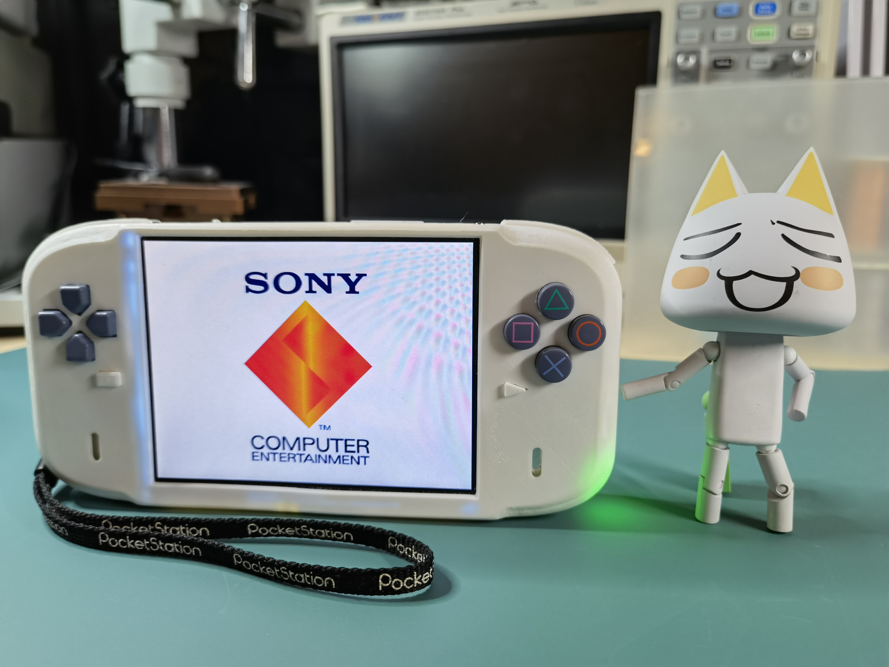PS Hanami is a portable Sony Playstation 1 I designed and built in one month for the 2023 Midwest Gaming Classic trade show. The centerpiece of the unit is an original PU-18 Playstation motherboard that I cut in half and folded like a book. The traces between the PCB halves are reconnected with magnet wire; I had to deadbug rewire numerous ICs like the BIOS ROM and audio DAC as well.

Unlike my more modern UltraWii portable, this handheld is built in the traditional/old-school portablizing fashion, with mostly off-the-shelf PCBs and hot glue. It incorporates a 5” VGA LCD, Shinobi Scaler, Xstation, and stereo speakers in a case I designed and 3D printed. It runs for approximately 2.5 hours from two 3500mAh 18650 cells.
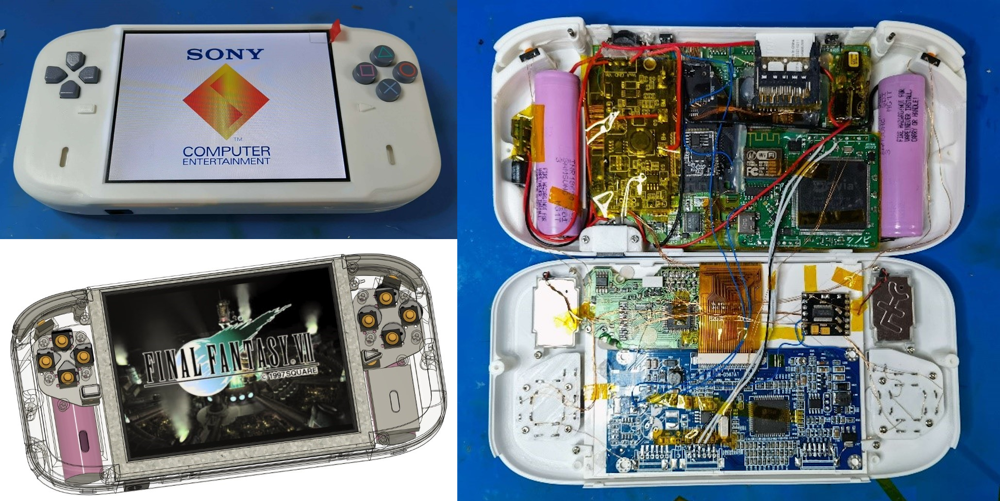 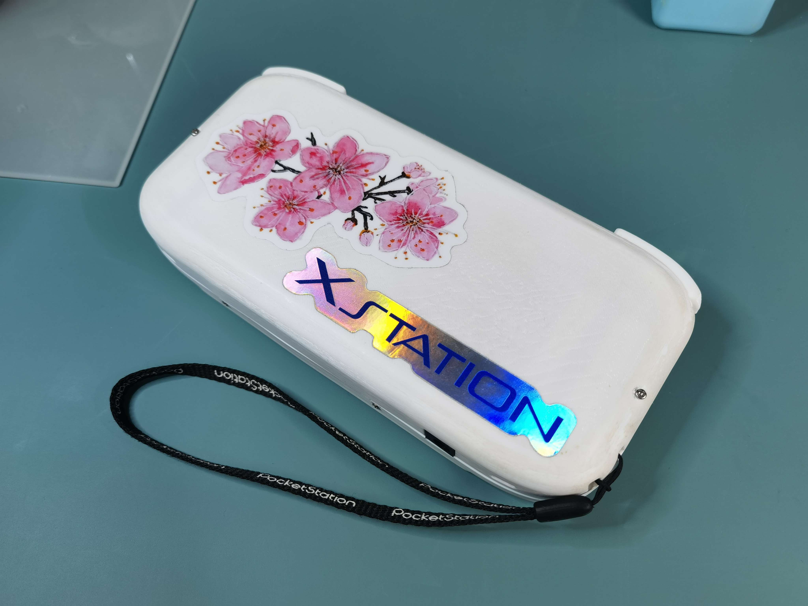This build was pretty popular online. You can find news coverage of it here.
Kawaii

A collaboration between myself, WeskMods, and haoxuanding2, the Kawaii is a fully functional Nintendo Wii ‘keychain’ measuring only 60x60x15mm. The shell is CNC machined from aluminum, anodized, and laser etched. The unit mates with a dock via pogo pins, allowing the user to connect to a TV and plug in controllers. The project is still undergoing some final optimizations, with a full open-source release planned for early 2025.


Click here to check out news coverage of this project!
Thundervolt

Thundervolt is an open-source hardware and software suite I developed in collaboration with a few other members of the BitBuilt community. It enables software-configurable undervolting of Nintendo Wii motherboards via a homebrew app, which reduces their power consumption and allows handheld/miniature Wii devices to run longer and cooler. The Thundervolt PCB is a “hat” that solders onto the Wii motherboard, and features hand-drawn soldermask aperture artwork. Please see the GitHub repo for more details!

Wii U Reverse Engineering
As a veteran member of the BitBuilt.net forums, an online community centered around video game console portablizing, I have developed various bleeding-edge motherboard trims to allow consoles to fit inside battery-powered handhelds. My work on the Nintendo Wii U is a prime example: over the course of three months in 2023, I developed an aggressive trim based on scans and X-rays I took of the 6-layer Wii U motherboard. I clean-room reverse-engineered the pinouts and functionality of various circuits on the PCB as part of this process.

 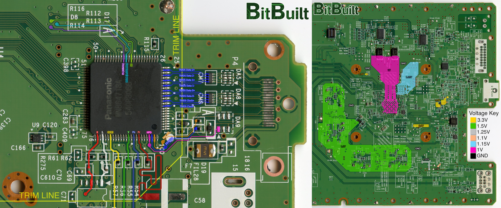
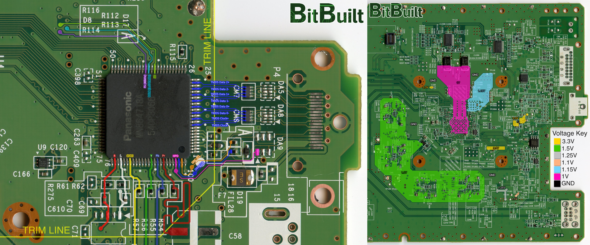
In September 2023, I completed the LOLWUT trim, which reduces the Wii U’s board area by over 70% by relocating a plethora of components to vias under the processor using magnet wire. The end result is a fully-functional Wii U that measures only 81 x 111mm— the perfect size to integrate into a battery-powered handheld.
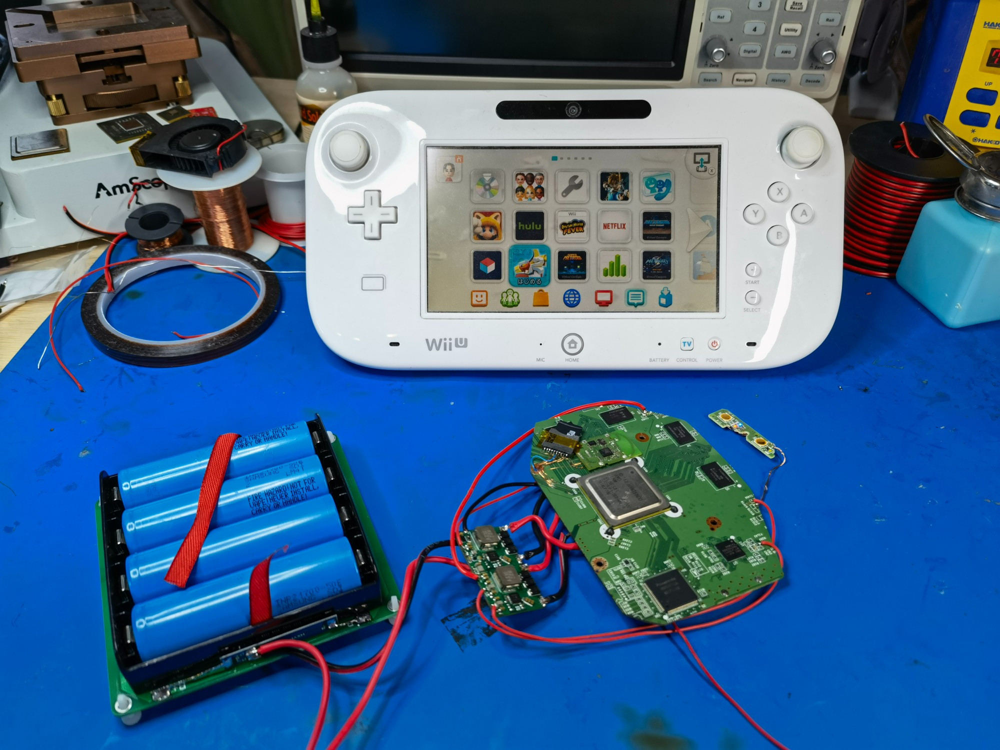

To power the motherboard, I designed a ~20W regulator board capable of generating the various system voltage rails from 1S 21700 lithium-ion cells. The design is open source— check it out on GitHub!

Scampi
An open source, shrimp-themed audio amp utilizing a TLV320AIC3110 and an ATtiny1616. Firmware written in C using PlatformIO.
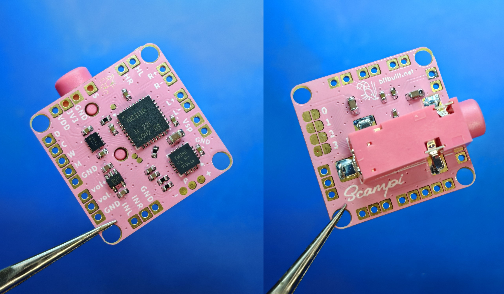Check it out on GitHub!
Shinobi Scaler
Shinobi Scaler is a miniaturized open source reimplementation of the widely available GBS-8200 video scaler board. The GBS-8200 utilizes a Trueview 5725 scaler IC and is commonly used to upscale analog video from retro game consoles for display on flat panel TVs and monitors.
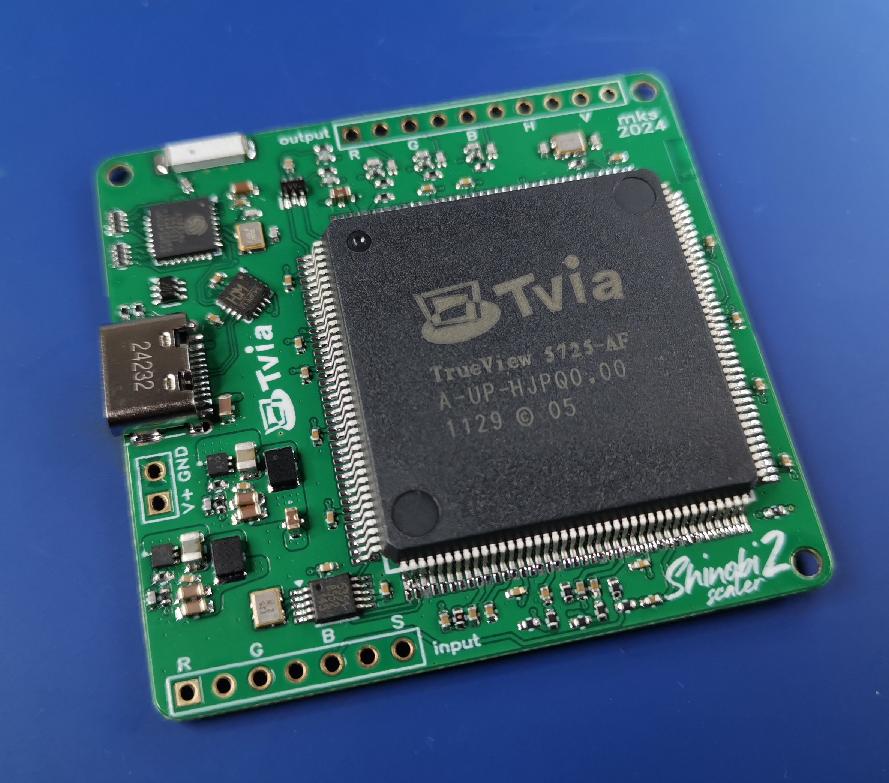I reverse-engineered the GBS-8200 PCB and reimplemented it, integrating high-quality voltage regulation, an ESP8285 with a 2.4GHz antenna to run GBS-Control (a community-developed custom firmware), and other quality-of-life improvements for portablizers. I have assembled and sold these in small batch quantities to the modding community in the past. Check it out on GitHub!
melonHD
A work-in-progress HDMI to DP Alt Mode solution for DIY handheld game devices, based on the LT6711A.
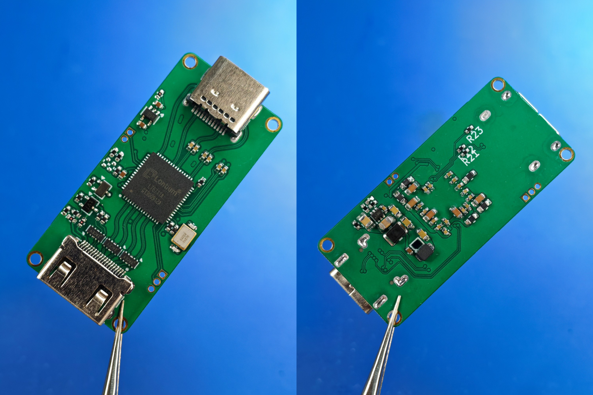MaplePad
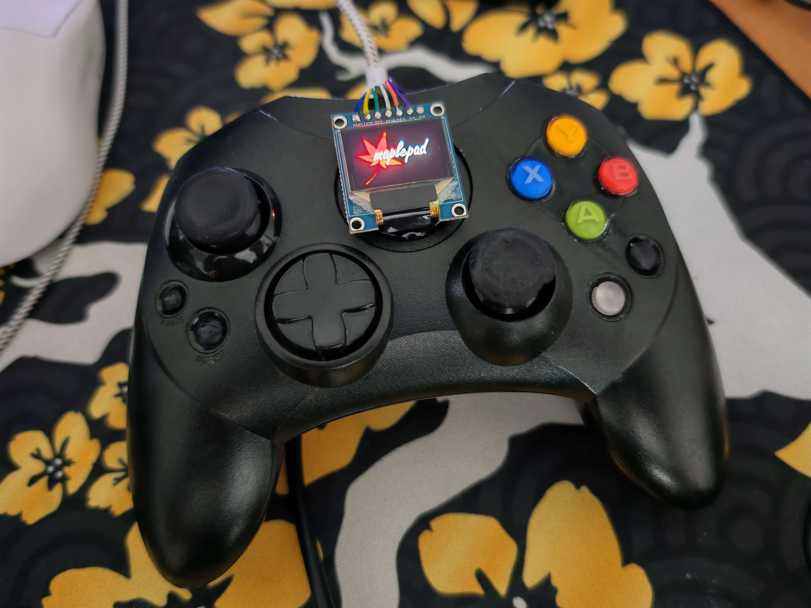MaplePad is my permissively-licensed (CC-BY-4.0) open-source Dreamcast controller emulator, which implements the Sega Dreamcast’s Maple Bus (used for controllers and peripherals) in software and PIO on a Raspberry Pi RP2040 microcontroller. MaplePad is a heavily modified fork of Charlie Cole’s Pop’n Music Controller codebase, and is intended to be a feature-complete Dreamcast controller, arcade stick, VMU, and Purupuru (rumble) pack emulator for portablizing applications. I have designed, assembled and tested a number of custom RP2040 boards that run MaplePad code and function as DC controller replacements.

I’m proud to say that MaplePad has been adapted into various commercial products by enterprising makers across the globe, including GamesCare Brasil and the Chinese arcade/JAMMA community. Please visit the GitHub repo for more details!
Game Console Reimplementation
These projects are all WIP attempts to reverse-engineer and reimplement video game console hardware into smaller and more efficient form factors. This usually involves capturing a schematic of the console, which requires stripping the motherboards and sanding the soldermask off, revealing the bare copper and internal layers. I scan these layers and use the images to RE the boards, cross-referencing existing partial schematics when they’re available. The original ICs must be removed and transplanted onto the new PCBs for these projects.
Vegas (Nintendo Wii)
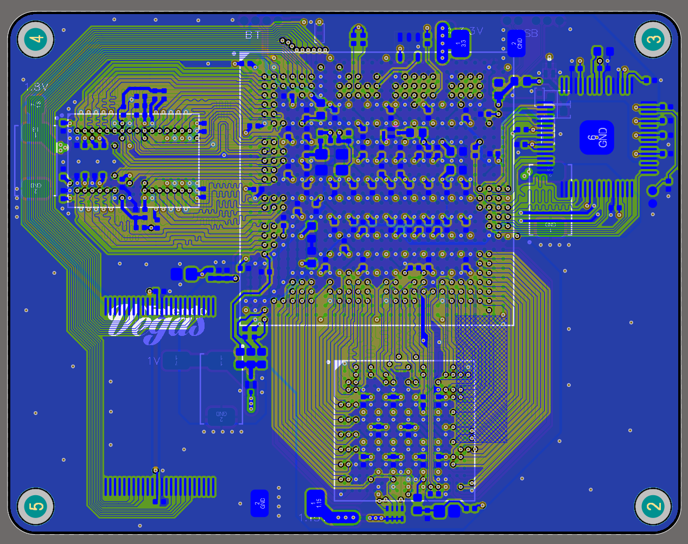This project was inspired by something my friend Aurelio started a few years ago, but didn’t finish. It’s in its early stages but will implement a full Nintendo Wii with all the accoutrement of a typical Wii portable integrated onto a single PCB. This design is more complex than the Dreamcast redesign since it uses GDDR3 and the onboard buses are very fast. Impedance calculations and careful consideration to board stackup have been taken into account to replicate the original motherboard’s characteristics. Right now I’m battling solderability issues after reballing the original Wii chipset and transplanting it onto the new PCB.


αSNES (Super Nintendo)

αSNES is a complete Super Nintendo on a 77x68mm four-layer PCB, including a BQ25792 for battery charging, a TPS61235 5V boost converter, and an LM49450 I2S audio amp. The battery charging and audio amp are controlled by an onboard ATtiny84A. This board has been tested and boots SNES games via a cartridge slot connected over FFC.
 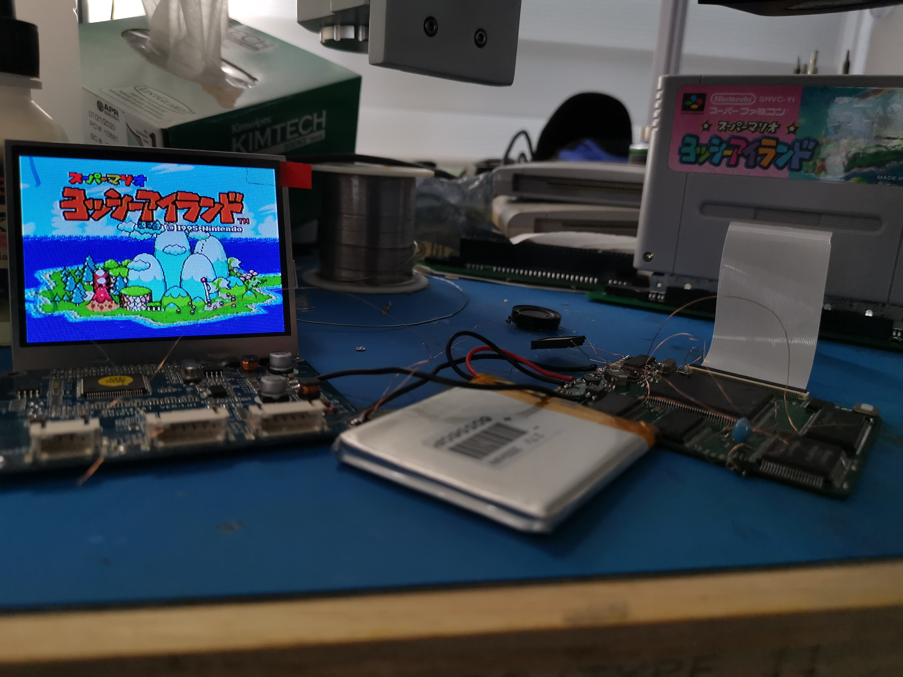
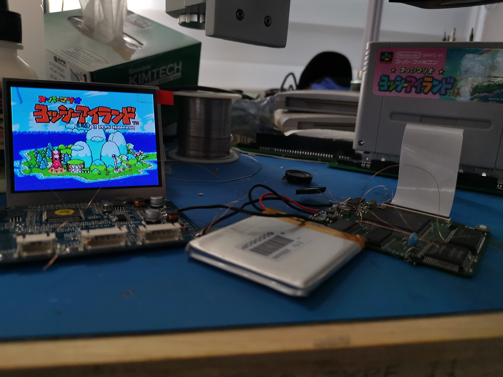
The redesign was aided by scans I made of the SNES Jr. motherboard in early 2020.

Flexible PCBs
Sometimes relocating ICs on modified boards is easier with a flexible polyimide PCB. I’ve designed quite a few of these and they are all open source on GitHub.
nandFlex

A simple flex for relocating the Wii’s NAND flash memory.
Caféflex
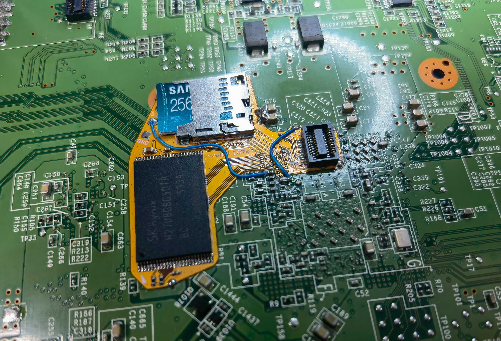Caféflex is an open source FPC I designed to relocate the Wii U’s TSOP NAND flash and Wi-Fi module. It also replaces the Wii U console’s eMMC with a microSD card. This greatly simplifies the ‘LOLWUT’ Wii U motherboard trim described above!
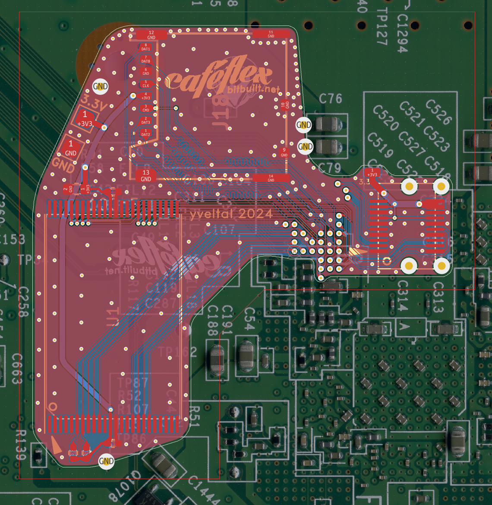AVEflex

AVEflex is a flexible PCB for relocating the Audio-Video Encoder (AVE) on the Nintendo Wii. By placing the AVE under the CPU on the underside of the mainboard, the board can be trimmed smaller while retaining analog video and audio out.

The latest iteration of the design is open source and licensed under Solderpad Hardware v2.1. Please check it out on GitHub!
FujiFlex
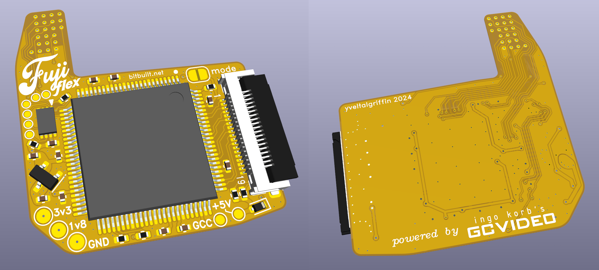FujiFlex is a flex PCB implementation of the popular GCVideo DVI HDL project, which adds DVI output to Wii consoles. The design is optimized for installation into custom handheld Wii builds and outputs DVI over a 19-pin FFC. Install photo by my friend loopj.
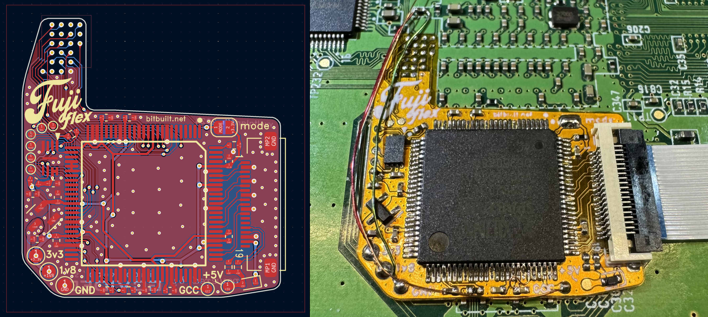Dreamcast FPCs

To enable further trimming of the Sega Dreamcast motherboard, I designed a trio of FPCs to relocate the AICA (sound coprocessor IC) and its SDRAM (replaced with modern BGA package), the BIOS (replaced with BGA) and disc drive connector, and the video encoder IC, named AICAflex, GDEMUflex, and DVEflex respectively.
I have spent about 9 months iterating on AICAflex; BGA SDRAM on an FPC is no joke. However as of July 2022 both GDEMUflex and AICAflex are working thanks to stainless steel stiffener and some DFM optimizations.

Miscellaneous
These are some other things I’ve made over the years.
Raspberry Pi Handhelds
I’ve designed and built a number of Raspberry Pi handhelds from scratch, like this 3D printed one with a trimmed Pi 3 and a 3.5” 640*480 LCD driven with the Pi’s parallel RGB interface.

Capstone Project
My engineering capstone project in college was a datalogger with ruggedization requirements imposed by the client, Sandia National Labs. My design included a redundant fallback datalogging system with a captive micro SD slot to ensure we would still collect data in the case of the main system’s failure.

Regulator Boards
I make many of these sorts of designs. They’re simple, but very useful in a hobby environment. This particular board has four bucks, with trimpot-adjustable Vout, optimized for powering a trimmed Wii motherboard.

Art PCBs
I enjoy dabbling in PCB artwork. The limited color palette and restrictions of the Gerber format make it a fun medium.
 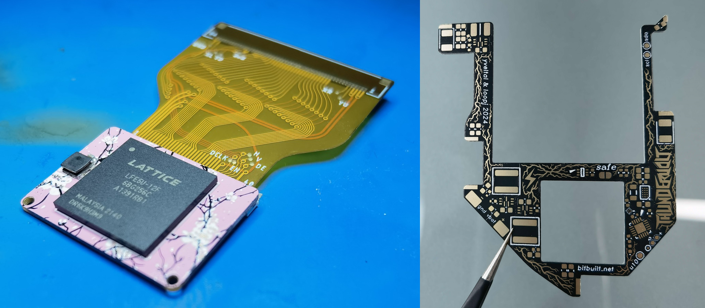
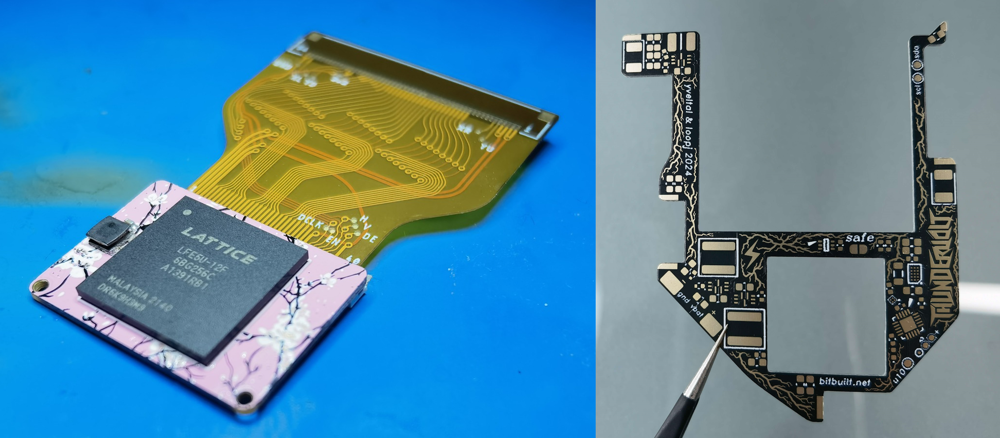
TTL Clock
A simple TTL clock I built to show to visitors at NMSU’s Aggie Innovation Space.